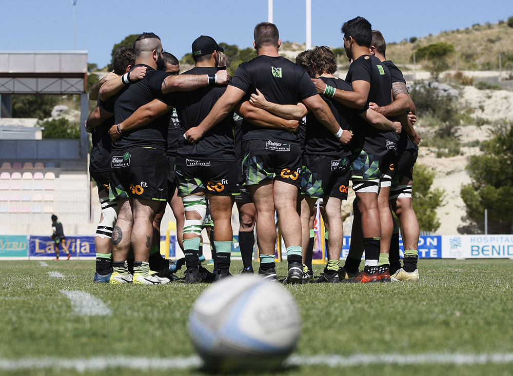
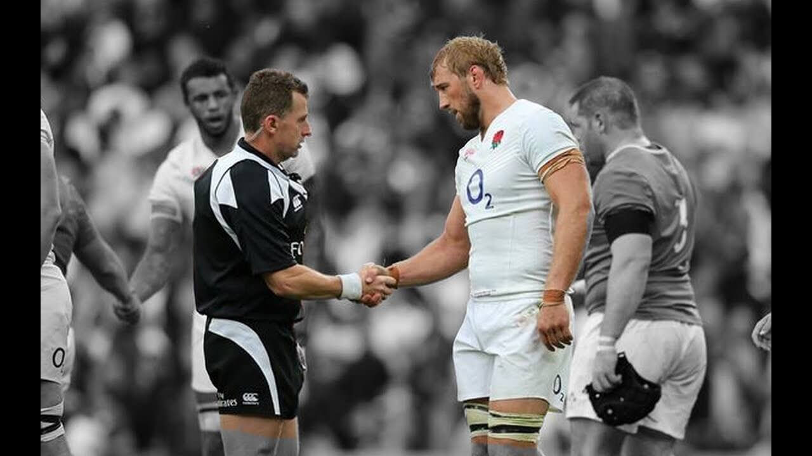

El rugby es un deporte en el que tradicionalmente se ha dado gran importancia a los valores morales. Las normas oficiales del juego están integradas por lo que se denomina "Documento del Juego", orientado a garantizar la conducta ética de todos los involucrados en el juego, "tanto dentro como fuera del campo". Una muestra de la importancia de los valores éticos en el rugby es la disposición referida al espíritu del juego que está incluida en el Documento:
Espíritu
El rugby le debe mucho de su atractivo al hecho de ser jugado conforme la letra, pero también dentro del espíritu de las Leyes. La responsabilidad de asegurar que esto ocurra no reside en un solo individuo: involucra a entrenadores, capitanes, jugadores y árbitros. Es a través de la disciplina, el control, y el respeto mutuo que florece el espíritu del juego, y en el contexto de un juego tan exigente físicamente como el rugby, estas son las cualidades que forjan la camaradería y el sentido de juego limpio, esencial para el prolongado éxito y supervivencia del juego.
Pueden considerarse tradiciones y virtudes de vieja estirpe, pero han pasado la prueba del tiempo y en todos los niveles en que se practica el juego, siguen siendo tan importantes para el futuro del rugby como lo han sido durante su largo y distinguido pasado. Los principios del rugby son los elementos fundamentales sobre los que se basa el juego, y permiten a los participantes identificar inmediatamente el carácter del juego y lo que lo hace peculiar como deporte. Documento del Juego9 '
¿Quién podrá contra mí?
Es muy probable que para los que no somos deportistas profesionales, el rugby no sea nuestra actividad principal para sobrevivir. Claramente no nos da de comer. Posiblemente, hasta hay quienes digan que gastamos muchos recursos, al buscar el protector bucal o las zapatillas adecuadas, sin mencionar los tiempos de entrenamiento. El dinero y el tiempo son importantes, no hay duda de eso. Pero ¿qué hay de la felicidad? ¿Cuánto cuesta ser feliz? ¿Cuál es el valor de esa sensación de haber hecho aquello que te gusta? Felicidades señores, eso da el rugby y muy pocas cosas en la vida pueden jactarse de eso. Antes no creía mucho en Dios, pero ahora sé que El existe, pues lo siento conmigo y en las fuerzas nuevas que Él me da cuando estoy destrozado después de cada entrenamiento, es mi deseo honrarlo, pues me ha hecho feliz. Esa sonrisa detrás de cada moretón y de cada pase bien hecho con mis hermanos, no se puede calcular ni comparar con nada. Y es que, dándole una vuelta a la frase, la actitud y la entrega no se negocian y no tienen precio. Y es que yo sueño rugby, respiro rugby, como rugby y vivo rugby.
Durante el día pienso en esas jugadas y tackles, durante la noche sueño con el partido que se viene. Sueño y soy feliz. Respiro rugby por donde paso y como rugby donde me encuentre, con mucha Humildad, Honor y Pasión. En otras palabras, llevo una vida feliz, y puede que quizás tenga muchas cosas en mí contra, pero si Dios, mi familia y mis hermanos están conmigo... ¿Quién podrá contra mí? .